VVC RDOQ 硬件架构设计 Dashboard
Hardware Architecture & Pipelining
第一章 RDOQ 算法原理 (Algorithm Principles)
总览：RDOQ (Rate-Distortion Optimized Quantization) 的本质是在标准量化 (SQ) 完成后，对每一个变换系数进行局部的 RD 代价比较：它只尝试将系数“减弱一档”或“强制清零”，然后计算 Cost = Distortion + λ × Rate，择优保留代价最低的量化值。
整个算法由三个层级构成：① 系数级（逐点串行扫描、计算 CABAC 码率代价、选最优 Level）→ ② CG 级（4×4 块整体抹零判决）→ ③ TU 级（终极 CBF 清零判决）。为便于理解，本章按三大块展开：1.1 整体过程与原理（RDOQ 在做什么、扫描怎么跑、候选怎么来）、1.2 Dcost（失真代价）怎么算、1.3 Bincost（码率代价）怎么算；最后用一个综合示例把 Cost = Dcost + λ × Bincost 串起来。
在深入硬件优化前，必须厘清 RDOQ 在 C-Model 中的算法本质。RDOQ 并非盲目尝试，而是一场从宏观扫描到微观计算，再到层级截断的精密计算过程。
1.1 整体过程与原理：RDOQ 在做什么、怎么跑
当一个 Transform Unit (TU) 经过 DCT 变换后，其能量分布具有极强的规律性：
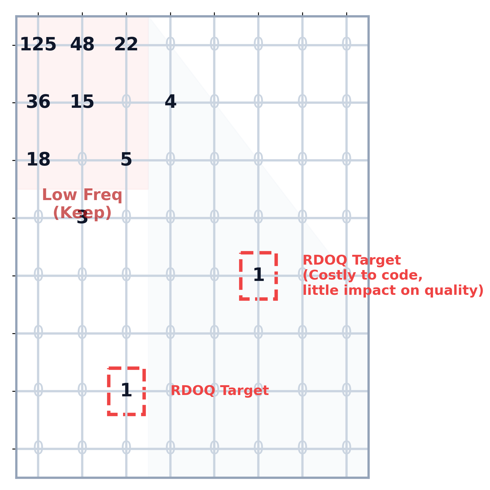
- 低频区（左上角）：能量高度集中，系数值极大。这里的系数对画面质量起决定性作用，几乎不可能被 RDOQ 清零。
- 高频区（右下角）：能量稀疏，散落着大量幅值极小（量化后
Level = 1或2）的系数。
为何优先处理此类系数？因为在 CABAC 熵编码中，编码一个孤立的
Level=1 系数，需要消耗极高的语法开销（需要编码 sig_coeff_flag=1、坐标位置、符号位等）。它们消耗了不成比例的巨量 bits，但对画质的贡献却微乎其微。RDOQ 的核心收益，正是通过评估代价，将这些“性价比极低”的边缘系数强制量化为 0，从而换取码率的显著降低。
锁定靶点后的宏观扫描路径 (Nested Scan)
明确了高频系数是优化靶点后，系统需要一套严格的扫描顺序来遍历它们。微观的系数代价值比较并非毫无章法地乱序执行。在一个完整的 TU 内部，RDOQ 遵循极其严格的嵌套扫描 (Nested Scan) 流程。很多初学者会疑惑：“既然是 4x4 处理，为什么又说是单点串行扫描？” 让我们通过下面的动态推演一探究竟：
扫描状态监控 (TU = 8x8)
当前坐标 (x,y): -
当前所在系数组: -
当前处理层级: 等待开始
- 系数级：严格串行的单点逆向扫描 (Point-by-Point)
虽然 TU 被划分为了 4x4 的块 (CG)，但在硬件微观执行层面，依然是一个坐标一个坐标 (单点) 去串行处理的。从末尾非零系数所在的 CG 开始，沿着对角线方向逆向推进。例如处理(4,5)后处理(5,4)。它们绝对不能跨点并行处理，因为后一个系数的 CABAC 概率模型，强依赖于前一个系数的最终量化结果。深度解析：这道阻止并行的“数据冒险 (Data Hazard)”墙是如何产生的？在计算当前坐标
(x,y)的上下文增量ctxInc时，系统需要构建一个周边相邻掩码patternSigCtx。这个掩码强依赖于它的右侧邻居 (x+1,y) 和下方邻居 (x,y+1) 最终是否为非零系数。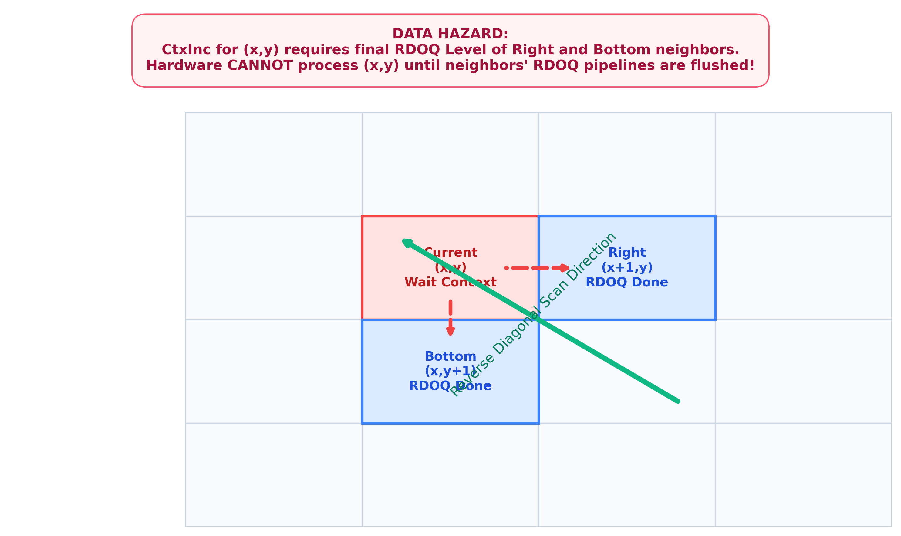
- 时空交错：因为扫描顺序是“从右下到左上的逆向对角线”，这意味着右侧和下方的邻居在时间轴上必然先于当前系数被扫描。
- 致命的 RDOQ 反馈：RDOQ 的贪婪本质在于“试探与微雕”，它极有可能把原本初始量化不为 0 的右侧邻居，为了省码率而强制量化为 0 (Level=0)。
- 并行悖论：如果硬件设计想把
(x,y)和(x+1,y)放入同一个时钟周期内流水线并行计算，那么在算(x,y)的 CABAC 码率代价值时，(x+1,y)的最终 RDOQ 判决结果还没出炉！硬件根本不知道patternSigCtx该不该包含这个邻居，从而导致查表的Fractional Bits Cost彻底跑飞。因此，必须老老实实等前一个系数的 RDOQ 彻底走完全流程，其最终状态固化后，才能推导下一个系数的 Context。这就是所谓“强依赖”的硬件灾难级来源！
- CG 级：4x4 块级阻断判决 (Sub-Block Flag)
当一个 4x4 CG 内部的 16 个系数全部单点处理完毕后，系统会整体暂停，进行一次块级宏观算账：“如果我把刚才这 16 个系数连同这个 4x4 块的标志位直接全部抹零，总体代价会不会更低？” 如果是，则触发coded_sub_block_flag = 0。 - TU 级：终极判决 (Root CBF)
当单点扫描最终抵达并处理完左上角的 DC 系数(0,0)，整个大 TU 扫描宣告结束。引擎最后评估一次将整个 TU 清零的代价，如果更低，则触发cbf = 0。
其实并不矛盾。“4x4”是管理的粒度（决定何时触发块级评估），而“单点”是执行的粒度（保证 CABAC 依赖的正确性）。 只有跑完完整的 系数级 → CG级 → TU级 三层循环后，RDOQ 流程才算真正“计算完毕”。
整体流程的最后一环：候选 Level 的精准产生
对于选定的变换系数 Ctrans，RDOQ 不会遍历所有数字，而是基于普通标量量化 (SQ) 的结果进行局部试探：
- 首先执行普通量化：LSQ = round(Ctrans / Qstep)。
- 随后，RDOQ 引擎通常只会产生 2 到 3 个候选 Level 参与 PK：{ LSQ, LSQ-1, 0 }。
- 调整逻辑：它只会尝试将系数“减弱”或“抹零”，绝不会尝试“增强”（因为增强既增加误差又增加码率）。
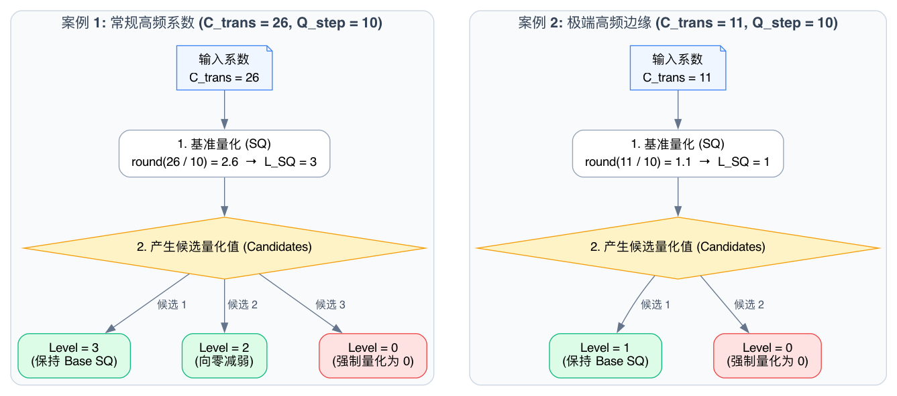
假设我们有一个高频系数 Ctrans = 26，并且当前量化步长 Qstep = 10。
1. 基准量化： 26 / 10 = 2.6，四舍五入后得到基准
LSQ = 3。2. 产生候选： RDOQ 引擎会选定三个候选量化值参与代价比较：
Level = 3 (保持)、Level = 2 (减弱)、Level = 0 (强制量化为 0)。如果是像上图那样更极端的 Ctrans = 11，
LSQ = 1，那么候选就只有 Level = 1 和 Level = 0 了。正是由于这种收敛机制，庞大的搜索空间被转化为极简的“二选一”或“三选一”贪婪比对。
承上启下：上面示例已经展示了 RDOQ 的整体过程——逆向逐点扫描 → 产生候选 Level → 比较总代价择优。总代价由两项构成：
C-Model / 硬件中，上式以定点整数实现（与 1.1 决策树里的 273,904 / 242,400 同一套量纲）：
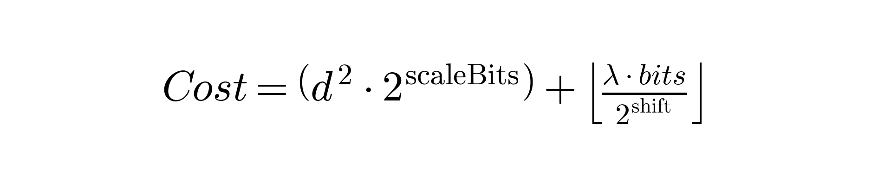
其中 d² · 2scaleBits 即 Dcost 项，⌊λ·bits / 2shift⌋ 即 λ×Bincost 项。下面两节分别把这两项拆开讲透：1.2 讲失真 Dcost 怎么算（简单、可并行），1.3 讲码率 Bincost 怎么算（复杂、强串行）。
1.2 Dcost（失真代价）的计算
失真 Dcost 衡量的是“把系数量化成某个 Level 后，重建画面会偏离原始多少”。它的计算比码率简单得多，但有三个常被忽略的关键点。
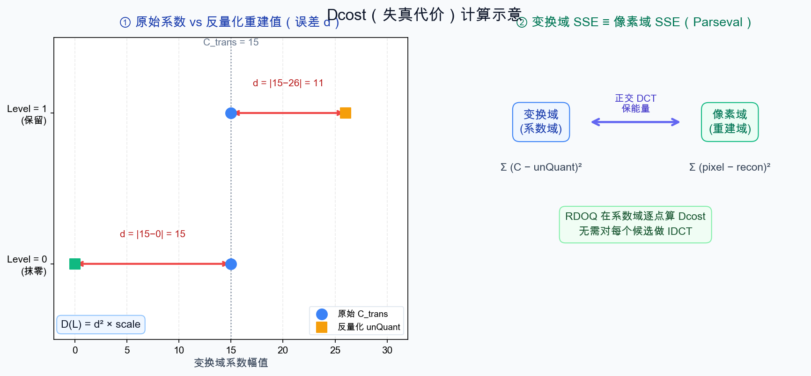
图：左 — 两个候选的误差 d 与 Dcost 数值；右 — Parseval 定理保证变换域 SSE 与像素域 SSE 等价
关键点 ①：误差要对“反量化重建值”算，而不是对 Level 算
解码端拿到的是量化 Level，它会先反量化 (Dequant) 还原出一个重建系数 unQuant = Level × Qstep，再做反变换。所以真正的失真，是原始变换系数与反量化重建系数之间的差，而不是拿原值和 Level 直接比：
抹零的代价就是 L=0 的特例：D(0) = Ctrans² × scale（整段系数能量全部变成误差）。
关键点 ②：在“变换域”直接算，省掉每个候选的反变换
直觉上，求重建误差应该回到像素域：反量化 → 反变换 (IDCT) → 和原像素相减。但若对每个系数的每个候选都做一次 IDCT，开销根本无法接受。
救命的数学：帕塞瓦尔定理 (Parseval)。由于 DCT/DST 是正交变换，它保能量——变换域里的平方误差之和，恒等于像素域里的平方误差之和（只差一个固定的归一化常数）。因此 RDOQ 完全可以留在系数域逐点累加平方误差，无需反变换回像素域，结果却完全等价。
关键点 ③：硬件实现式（定点放大域，避除法/浮点）
为了规避除法和浮点，HM/硬件并不真去算 Level × Qstep，而是在量化的“放大定标域”里做：设系数放大后的精确值为 levelDouble = |Ctrans| × Q，量化成 L 后在同一域的重建值是 L << qbits，于是：
其中 errScale 是初始化时按量化步长与变换归一化预算好的定点缩放因子，作用是把“定标域的平方误差”换算成真实失真量纲，从而能直接和 λ × Bincost 相加比较。它与上面的概念式完全等价，只是把缩放搬进了乘法、避开了反量化除法。
沿用上文整体判决示例：边缘系数
Ctrans = 15，SQ 量化为 Level = 1，其反量化重建值 unQuant = 26，失真定标 scale = 1024。
- 保留 Level = 1：误差 d = |15 − 26| = 11 →
D(1) = 11² × 1024 = 123,904。 - 强制 Level = 0：误差 d = |15 − 0| = 15 →
D(0) = 15² × 1024 = 230,400。
D(1) < D(0)）。所以单看失真，永远偏向“保留”；是 1.3 节的码率项 λ × Bincost 把天平往“减弱/抹零”方向拉——两者如何在整体判决示例中拔河，1.1 节上文已完整展示。
1.3 Bincost（码率代价）的计算：从 CABAC 语法元素到分数比特
在评估某个候选 Level 时，Cost = Dcost + λ × Bincost。上一节已讲清 Dcost（失真）如何由系数域平方误差求得；本节专注更棘手的 Bincost（码率代价）——精确估算 CABAC 编码这个 Level 到底要花多少比特。
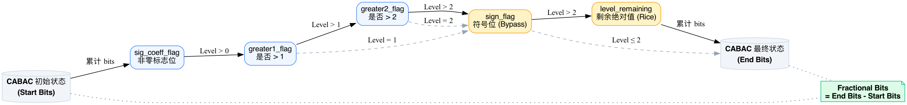
如上图所示，C-Model 的 rdoq_coeff_est() 函数会模拟真实的 CABAC 状态机更新，但不做实际的区间划分，而是查表获取理论上的“分数比特 (Fractional Bits)”。总比特消耗的计算公式为：
⚙️ 关键前提：CABAC 码率代价的四步计算链路
在计算上面公式中每一项的 Fractional Bits 时，硬件/C-Model 必须严格按照以下四步串行链路逐步推导。这四步环环相扣，缺一不可：
根据候选 Level 确定每个标志的值：
sig = (L>0)?1:0gr1 = (L>1)?1:0sign → Bypass
每种语法元素有独立的映射规则：
sig_flag 需 BaseOffset + cnt
gr1_flag 用历史计数器
sign_flag 走 Bypass 无需 ctx
用 ctxInc 作为 SRAM 地址
读出 m_ucState
(含 pStateIdx 和 valMPS)
用 m_ucState + flag_val
构造查表地址
→ 读出 Fractional Bits
硬件视角：这四步在流水线上必须严格串行执行——第②步的 ctxInc 计算依赖第①步确定的语法元素类型（不同语法元素走完全不同的寻址逻辑），第③步的 SRAM 读取依赖第②步算出的地址，第④步的 ROM 查表又依赖第③步读出的 m_ucState。这条四级串行链路的总延迟就是单个系数 CABAC 码率估算的时序瓶颈。
Bypass 捷径：并非所有语法元素都需要走完全部四步！像
sign_flag 在第①步就被识别为 Bypass 模式，直接输出固定代价 32768（1 bit），完全跳过第②③④步，这是标准留给硬件的关键加速通道。
核心解密：上下文分数比特 (Fractional Bits) 与 128 级熵值查表 (Entropy LUT) 的底层逻辑
在 CABAC 中，每个上下文模型 (Context Model) 都在不断追踪特定语法的概率状态，表现为一个 0~63 的整数状态索引 pStateIdx（代表 LPS 出现的概率），再加上 1 位的 valMPS 标志。两者组合构成了 128 个可能的上下文状态。
在查
Entropy_LUT 之前，C-Model 必须先从一维的 Context_Array 中定位当前标志位专属的概率模型，从中提取出 pStateIdx 和 valMPS。为了满足硬件架构师对时序和状态机的精准控制需求，以下展示 CABAC 中最复杂的 ctxInc 动态增量计算与 Context_Array 初始化的数学级流向：
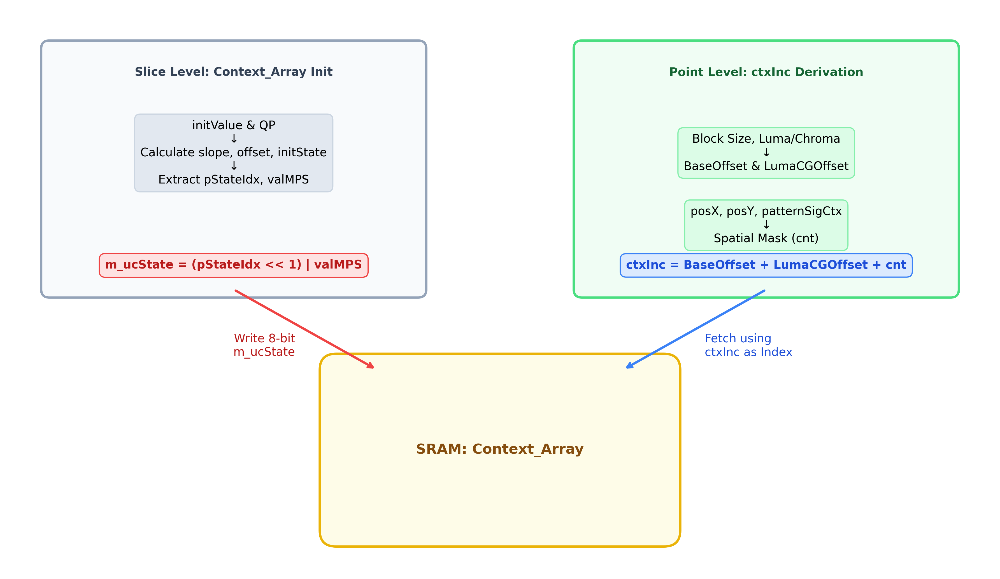
初学者极易误以为 Context_Array 只在 Slice/CTU 级别（即所谓的“初始化”）才更新一次，这是一个致命误区！必须严格区分 真实熵编码 (True CABAC) 与 RDOQ 预估 (RDOQ Estimation)：
1. 真实 CABAC 阶段：它是 “像素/标志位 (Bin)” 级别 的闭环更新！每编码完 1 个比特，SRAM 里的状态机 m_ucState 就会根据刚刚编出的是 0 还是 1 立刻自我迭代覆写。这就是 CABAC 高压缩率的灵魂——极致的自适应。
2. RDOQ 预估阶段 (本图核心)：由于 RDOQ 是在做“假设性”代价计算（如果我把这个像素抹零，代价是多少？），如果在评估候选值时更新了 SRAM，就会污染后续真实的概率模型。因此，在 RDOQ 硬件流水线中，通常采用 冻结模型 (Frozen Context)：只读不写，使用 Slice 初始化的初值贯穿整个 CU；或者更精细的 缓存副本备份 (Shadow Copy)：在每个 TU 评估结束后进行状态回滚 (Rollback)！
1. 动态增量 ctxInc 计算公式 (以 sig_coeff_flag 为例)
- BaseOffset:
$$ \text{BaseOffset} = \begin{cases} 9 & \text{if } \text{Size} = 8\times8 \text{ and } \text{DiagScan} \\ 15 & \text{if } \text{Size} = 8\times8 \text{ and } \text{NonDiagScan} \\ 21 & \text{if } \text{Luma} \text{ and } \text{Size} > 8\times8 \\ 12 & \text{if } \text{Chroma} \text{ and } \text{Size} > 8\times8 \end{cases} \quad \color{#64748b}{\text{(由块尺寸和扫描模式决定的基准地址)}} $$
💡 深度解析：是谁决定了 DiagScan 与 NonDiagScan？
这是由预测引擎隐式决定的 MDCS (模式依赖系数扫描) 机制。解码器无需读取额外码流，直接根据当前的Intra PredMode (帧内预测方向)盲推：
• 若 PredMode 为 22~30 (接近垂直)，残差能量挤压在水平轴，强制切为 HorScan (水平扫描)。
• 若 PredMode 为 6~14 (接近水平)，残差能量挤压在垂直轴，强制切为 VerScan (垂直扫描)。
• HorScan 和 VerScan 统称为 NonDiagScan。由于它们的非零概率分布变了，CABAC 标准强制为它们劈出独立的概率模型（如跑到基址 15 取模型）。
• 其他模式 (如 Inter 帧间块、Planar/DC、大于 8x8 的块) 均无脑采用默认的 DiagScan (对角线扫描)。这种 CABAC 对预测模块的强后向依赖，是硬件流水线时序设计的一大痛点！ - LumaCGOffset: $$ \text{LumaCGOffset} = \begin{cases} 3 & \text{if } \text{Luma} \text{ and } (\text{posX} \ge 4 \text{ or } \text{posY} \ge 4) \\ 0 & \text{otherwise} \end{cases} \quad \color{#64748b}{\text{(若脱离左上角 DC 区域，增加额外偏移)}} $$
- cnt (空间模板坍缩): $$ \text{cnt} = f(\text{posX} \pmod 4, \text{posY} \pmod 4, \text{patternSigCtx}) \quad \color{#64748b}{\text{(基于邻居状态的微观坍缩偏移)}} $$
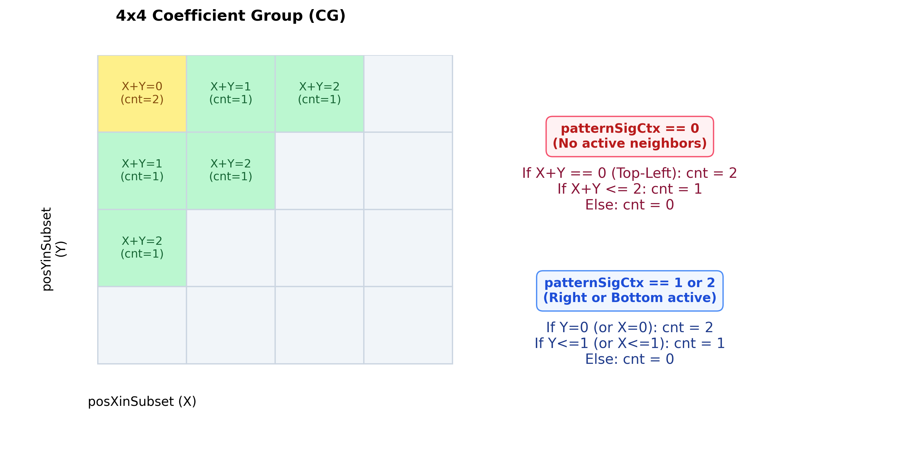
假设在一个 8x8 (log2BlockSize=3) 的 Luma TU 中，我们逆向扫描到了坐标 (posX=5, posY=6)，且它所在周边模板中尚未编码任何非零系数 (即 patternSigCtx=0)。
2) LumaCGOffset = 3 (因为 5>>2=1, 6>>2=1，和为2>0，跳出了 DC 所在的左上角 CG)
3) posXinSubset = 5 & 3 = 1; posYinSubset = 6 & 3 = 2。
4) 因为 patternSigCtx=0，且 1+2=3 > 2，走 false 分支，所以 cnt = 0。
最终推导出的 ctxInc = 21 + 3 + 0 = 24！
硬件拿到这个 24 的偏移量后，加上该语法元素的全局基址，就能从 SRAM 的 Context_Array 中瞬间读出属于这个坐标的 8-bit 上下文概率状态 (m_ucState) 了。
2. Context_Array 内部节点 (m_ucState) 初始化公式
在每个 Slice 编码的伊始，必须利用规范表（ITU-T 官方标准文档中硬编码的最佳初始概率魔数）中的 initValue 与当前 QP 初始化上述一维阵列中的每一个 8-bit 节点：
在官方标准中，专家通过海量视频序列的统计分析，为每一种语法元素硬编码了最优的初始概率值 (8-bit 整数)。
在 HM (HEVC C-Model) 源码中，这些规范表被完整地定义在
TLibCommon/ContextTables.h 文件里。例如最核心的非零系数标志位 sig_coeff_flag 的规范表如下：
static const UChar INIT_SIG_FLAG[3][NUM_SIG_FLAG_CTX] =
{
// 第一维：对应 I Slice (帧内编码) 的初始值
{ 170, 154, 139, 153, 139, 123, 123, 63, 124, ... },
// 第二维：对应 P Slice (前向预测) 的初始值
{ 155, 154, 139, 153, 139, 123, 123, 63, 153, ... },
// 第三维：对应 B Slice (双向预测) 的初始值
{ 111, 111, 125, 110, 110, 94, 124, 108, 124, ... },
};
硬件在每个 Slice 刚开始时，根据当前是 I/P/B 帧，拿着该语法元素对应的 ctxInc 偏移量作为数组下标，从这种表格里“抠”出一个查表数字。然后代入下面的数学公式，结合当前的 QP，计算出真正的动态初始概率。
假设标准规范中规定某个上下文的初始值 initValue = 184，且当前 Slice 的量化参数 QP = 37。
2) offset = (184 mod 16) × 8 - 16 = 8 × 8 - 16 = 48
3) initState = Clip3(1, 126, ⌊(10 × 37) / 16⌋ + 48) = Clip3(1, 126, 23 + 48) = 71
4) 因为 71 ≥ 64，所以最高概率符号 valMPS = 1。
5) 概率状态索引 pStateIdx = 71 - 64 = 7。
最终写入 SRAM 的字：m_ucState = (7 << 1) | 1 = 15 (即二进制 00001111)
这短短的 8 个 bit，完美浓缩了 valMPS（最低位为 1）和 pStateIdx（高 7 位为 7），硬件在随后查 Entropy_LUT 时直接将这 8-bit 当作地址线送入即可读出代价！
3. 其他核心语法元素的上下文或旁路机制 (Bypass)
正如你所敏锐察觉的，并非所有的语法元素都像 sig_coeff_flag 那么复杂！为了在压缩率和并行度之间取得平衡，HEVC/VVC 标准对后续的标志采用了不同的降维策略：
- greater1_flag 与 greater2_flag:
$$ \text{ctxInc}_{gr1} = (c_1 > 0) \ ? \ (c_1 > 1 \ ? \ 2 : 1) : 0 \quad \color{#64748b}{\text{(由同块内已编码的大于0的系数个数 } c_1 \text{ 决定)}} $$ $$ \text{ctxInc}_{gr2} = (c_2 > 0) \ ? \ 1 : 0 \quad \color{#64748b}{\text{(由同块内已编码的大于1的系数个数 } c_2 \text{ 决定)}} $$它们的核心思想是抛弃二维空间邻居，转而利用当前 TU/CG 内的历史编码统计值作为上下文。这种一维累加器极其容易被硬件维护，从而大幅缩减寻址路径！
- sign_flag (符号位):
$$ \text{Cost}_{sign} = 32768 \quad \color{#991b1b}{\text{(Bypass 模式：无 Context，恒定消耗 1 个真实比特)}} $$由于正负号出现的概率极其接近 0.5，标准规定其直接走 Bypass（旁路）模式。硬件不需要去查 Context_Array，也不会更新任何状态机，直接暴力写入 1 比特代价，完美解除依赖！
- level_rem (剩余绝对值):
$$ \text{Cost}_{rem} = \text{GolombRice}( \text{Level} - \text{BaseLevel}, \ cRiceParam ) \times 32768 $$对于极大系数，超出了前置 flag 表达范围的值也会进入 Bypass 模式。它使用哥伦布-莱斯编码 (Golomb-Rice)，根据当前维护的莱斯参数
cRiceParam动态决定消耗多少比特，同样零上下文依赖。
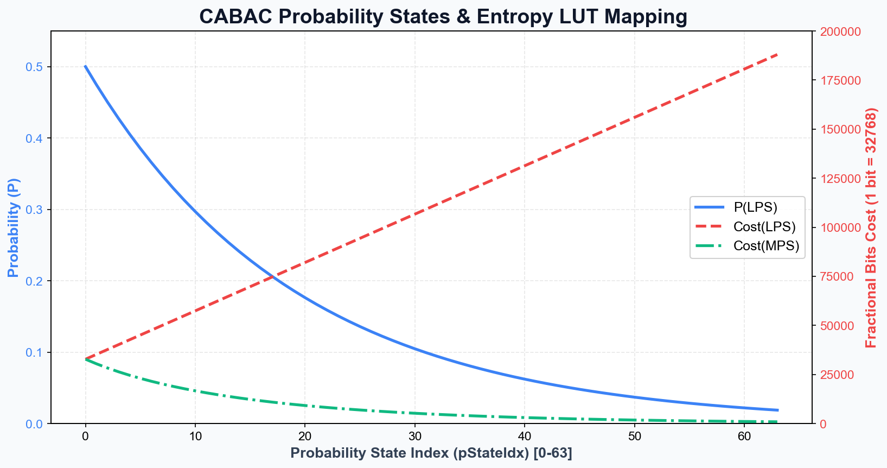
图：P(LPS) 与 Cost(MPS/LPS) 随 pStateIdx 的变化曲线（算式见下方建表三步）
🏗️ 这张 128 项的 Entropy_LUT 到底是怎么“算”出来的？（建表三步）
下图仅展示概率状态与代价曲线的形态关系（不含算式）。128 项 Entropy_LUT 的具体计算公式与建表步骤见下方文字。
这张表并非写死的魔数，而是编码器初始化时，用香农信息量公式对 64 个概率状态逐一离线计算、再定点放大后固化进 ROM 的。建表只需三步：
第 1 步：把概率状态 (pStateIdx) 映射成 LPS 概率
CABAC 把 LPS 出现概率离散成 64 档 (pStateIdx = 0~63)。状态越大越“笃定”(LPS 越罕见)，相邻档之间按固定比例 α 等比衰减：
于是 s=0 时 pLPS=0.5（最不确定，编谁都要 1 bit）；s=63 时 pLPS≈0.01875（最笃定，编 MPS 几乎不花钱）。
第 2 步：把概率换成比特数（香农信息量）并定点放大
对每一档状态，分别预算“编 MPS”和“编 LPS”两种事件的理论比特数，再 ×32768（1 bit = 32768）取整，存为一对相邻表项：
64 档 × 2 = 128 项。注意地址最低位恰好就是“这次编的是不是 LPS”，与查表时的 (flag_val ^ valMPS) 完美对齐——这绝非巧合，而是为硬件寻址刻意设计的。
第 3 步：固化进 ROM，运行期只查不算
整张 128 项表在 Slice/编码器启动时只算一次，之后运行期就是一块纯组合逻辑的 ROM，单周期查出，彻底规避了昂贵的 log2 与浮点运算。
建表结果速览（抽样几档）
💡 表中高亮的 s=7 一行，正是后文实战推演要用到的状态 (m_ucState=15 → pStateIdx=7)。可见 MPS 侧代价随状态升高而骤降，LPS 侧则越来越贵；少数极罕见的 LPS 项会超过 16-bit，工程上用更宽的整数或上限钳位来存。
🔍 深度解析：用 m_ucState 查 Entropy_LUT 的完整硬件流程
前文已经讲过，每个上下文节点在 SRAM 中的存储格式是 m_ucState = (pStateIdx << 1) | valMPS，其中高 7 位是概率状态索引 (0~63)，最低 1 位是最高概率符号 (MPS)。当硬件需要评估“编码某个二值符号 (bin) 的代价”时，会按以下流程执行：
pStateIdx = m_ucState >> 1（概率状态索引，0~63）
valMPS = m_ucState & 1（最高概率符号，0 或 1）
flag_val（0 或 1），硬件将 flag_val 与 valMPS 进行异或 (XOR) 操作。异或的巧妙之处在于：• 若
flag_val == valMPS（即编码的是高概率事件 MPS），XOR 结果为 0 → 查到的是“低代价”（因为高概率事件耗费的比特数少）• 若
flag_val != valMPS（即编码的是低概率事件 LPS），XOR 结果为 1 → 查到的是“高代价”（因为低概率事件耗费的比特数多）
硬件实现上，这就是一个纯组合逻辑的 ROM 查表，单周期即可完成，无任何迭代或反馈。
假设前文推算出的
m_ucState = 15（即二进制 00001111），现在要计算编码 sig_coeff_flag = 1 的代价：1) pStateIdx = 15 >> 1 = 7，valMPS = 15 & 1 = 1
2) flag_val = 1，flag_val ^ valMPS = 1 ^ 1 = 0（说明编码的是 MPS 事件，代价低）
3) 查表地址 = (7 << 1) | 0 = 14
4) bit_cost = Entropy_LUT[14]，读出对应的定点整数 ≈ 20160（即 20160 / 32768 ≈ 0.615 bits）→ 编码这个高概率 (MPS) 事件，代价不到 1 bit！
定点放大的魅力：通过预将浮点对数转化为定点整数（1 真实比特 = 32768 分数比特），原本复杂的概率计算被彻底降维。这就是为什么一个看似 1.2 bits 的代价，在硬件寄存器里其实是一个巨大的整数 39321！
第二章 硬件级 RDOQ 优化策略 (Hardware Optimization)
总览：RDOQ 算法的核心瓶颈在于 CABAC 上下文的强串行依赖，导致硬件吞吐率极低。为了在 4K/8K 实时编码中落地，工业界发展出了一整套优化策略。以下是所有关键优化手段的全局视图：
2.1 收益分布与取舍策略 (RDOQ Pruning Strategy)
RDOQ 作为压缩率优化工具，收益高度集中于边缘高频系数。工业界在架构层面必须做出极端的收益/吞吐权衡。
强制关闭大块（CU16/CU32/CU8）的 RDOQ 以满足时序吞吐限制，死保 CU4/TU4 的 RDOQ (wf4)。仅牺牲约 0.5% 的 BD-Rate，换取流水线不会因为长周期状态机陷入瘫痪。
自然语言算法步骤 (Algorithm Steps)
- 尺寸侦测: 控制逻辑从上游截获当前流入 TU/CU 的像素尺寸元数据。
- 大块旁路剔除: 若检测到 Size > 4x4 (如 8x8、16x16)，直接封锁 RDOQ 硬件入口，迫使数据流入极简的普通标量量化 (SQ) 模块，迅速输出残差。
- 精英放行: 若检测到 Size == 4x4，则判定为高频收益敏感区，立刻拉高使能信号，将数据与 Context 喂入全量 RDOQ 引擎。
- 高频提纯: 引擎针对这些 4x4 精英块进行深度 Cost 寻优，最终压榨出极限的 Bincost 并输出纯净的高频残差。
2.2 帧内环路死锁破解 (Intra Feedback Loop Bypass)
在 wf4 模块中，吞吐目标为 1 pix/clk（即每 16 拍处理一个 4x4 块）。但 RDOQ 会引入至少 8 拍延迟，使得总体重构反馈链路长达 24 拍，远超 16 拍预算。
为打破帧内相邻块的空间依赖链，强制预测重建像素跳过 RDOQ，走 Fast Loop 快速闭环。而 RDOQ 则在独立的 Slow Loop 中计算真实码流。
自然语言算法步骤 (Algorithm Steps)
- 源头分流: 像素在完成 DCT 与简单量化 (SQ) 之后，信号兵分两路，分别进入互不干涉的独立赛道。
- 快环抢跑 (Fast Loop): 第一路数据完全无视后续的 RDOQ，直接冲进反量化与 IDCT。仅仅 12 拍后即刻生成“快速预测重建像素”，并在第 13 拍立刻送给隔壁紧邻的块作为 Intra 空间预测源。死锁瞬间破解。
- 慢环细雕 (Slow Loop): 第二路数据则带着 SQ 的结果，不慌不忙地进入 RDOQ 核心计算池，耗时 20 拍以上计算出真实的最佳 Level 和 CABAC 码流估算。
- 合流决断: 最终写入比特流的数据完全采纳 Slow Loop 的高精结果；Fast Loop 的粗糙数据在发挥完“打破流水线气泡”的垫脚石作用后即被丢弃。
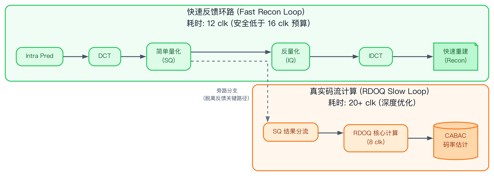
2.3 静态上下文预生成 (Static Context Generation)
传统的 Trellis 网格寻优存在深度的系数间因果依赖。在硬件设计中，必须采用“局部独立近似”来替换“全局网格搜索”，为彻底打平流水线铺平道路。
自然语言算法步骤 (Algorithm Steps)
- 静态快照剥离: 抛弃原本动态更新上下文的做法，改为在第 1 拍利用初步 SQ 的结果，一次性暴力预生成 16 个系数的 CABAC Context 静态快照。这彻底切除了系数计算之间的时序依赖链。
- 搜索空间极简压缩: 舍弃了从 0 一直搜索到最优 Level 的传统庞大循环，硬件判定器强行锁定只有原始 Q 和减弱一档的 Q-1 两个候选目标参与角逐。
- 并行兵团展开: 点亮 16 个完全独立的物理计算单元 (Compute Unit)。这 16 个单元在同一时钟周期内，各自抱着自己的 Context 快照，疯狂且独立地计算自己所属系数的 Q Cost 和 Q-1 Cost。
- 决出局部霸主: 16 个单元内部的比较器瞬间各自决出 Cost 最小的优胜 Level。最终通过总线拼合，形成当前 4x4 块的伪全局最优解。
2.4 Two-Stage 候选剪枝 (Two-Stage Fast RDOQ Pruning)
为了满足严苛的 4K/8K 帧率，单纯在底层进行流水线化仍显不足，必须从宏观算法上源头把控，控制 RDOQ 模块的绝对启动频次。
前级采用标量量化 (SQ) 与 CABAC 初估，选出 Top-2 Best Candidates。仅将这 2 个 Candidate 扔入深度 RDOQ 流水线。牺牲极小 BD-Rate，削减 70% 的面积与时间开销，完美闭环 16 clk 预算！
自然语言算法步骤 (Algorithm Steps)
- 海选起跑线: 帧内预测模块筛选出的 16 个潜在最优模式 (Candidates) 汹涌涌入流水线。
- 廉价粗筛阵列: 对于这 16 个候选者，门禁系统强行禁止它们触碰昂贵的 RDOQ 引擎，而是让它们全部只经过廉价的普通 SQ 量化，并结合简易查表估算出一个极其粗糙的 Cost。
- 末位残酷淘汰: 硬件冒泡排序树接收这 16 个粗糙 Cost 并进行火速排序，当场无情抹杀排名靠后的 14 个选项，只留下金字塔尖的 Top-2 精英。
- 精英极深造: 此时，只有这历经千辛万苦幸存的 2 个 Elite Candidates，才被获准正式踏入极其吃面积与功耗的 4-Unit 深度 RDOQ 优化阵列。吞吐量从而被奇迹般地压制在了物理预算极限之内。
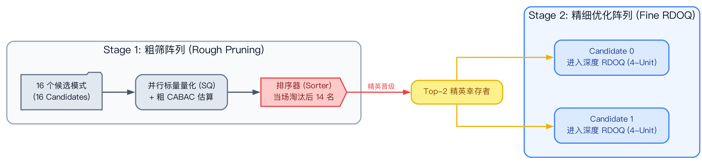
2.5 亮色度分治策略 (Luma-Chroma RDOQ Bypass)
在实际硬件流水线中，针对亮色度采取非对称的量化策略，以追求极致的性价比与吞吐率。这是一种完全符合标准语法且 100% 保证编解码一致性（Mismatch Free）的经典工程权衡。
由于人眼对亮度细节远比色度敏感，RDOQ 带来的压缩收益绝大部分集中在 Luma (亮度) 分量。强迫 Chroma (色度) 旁路 RDOQ，仅执行基础的标量量化 (SQ)，可在几乎不影响整体 BD-Rate 的前提下，节省可观的计算周期与面积开销。
自然语言算法步骤 (Algorithm Steps)
- 分量侦测: 流水线控制端根据当前 TU 的颜色通道元数据，区分 Luma (Y) 与 Chroma (Cb/Cr)。
- 色度快速旁路 (Chroma Fast-Path): 若为色度通道，强制封锁 RDOQ 硬件入口使能，数据仅流过廉价的普通标量量化 (SQ) 模块，快速闭环并输出残差。
- 亮度深度精雕 (Luma RDOQ-Path): 若为亮度通道（且符合 4x4 等精英尺寸），则获准进入完整的 RDOQ 深度优化寻优阵列，以压榨极限的视觉与码流收益。
2.6 强耦合解绑与 4×4 全并行架构 (Context Decoupling)
既然前文提到 patternSigCtx 造成了极其严重的数据冒险 (Data Hazard) 并导致硬件只能逐点串行扫描，那么是不是整个 RDOQ 都无法并行了呢？并非如此。HEVC/VVC 标准在设计时，专门为硬件架构师留了一个关键的“后门”。
4x4 小块与 DC 区域的“法外狂徒”特权
对于 4x4 尺寸的 TU（以及任何大尺寸 TU 中位于最左上角的 DC CG），标准做出了一个重要的妥协：
它们的上下文索引 ctxInc 只跟自身坐标 (posX, posY) 有关，彻底无视周边邻居状态！
ctxInc = f(posX, posY); // 完全解耦
} else {
ctxInc = f(posX, posY, patternSigCtx); // 强数据依赖
}
上述 4×4 的“完美解耦”是标准赋予的特权，但对于 8×8、8×16 等大尺寸 TU 中的普通 AC CG，patternSigCtx 的强依赖依然存在。硬件架构师常采用以下折中策略来缓解这个矛盾：
- 预先用 SQ 结果生成“近似”的 patternSigCtx：在 RDOQ 正式开始之前，硬件先拿着普通标量量化 (SQ) 的结果（而非最终的 RDOQ 结果）来判断每个邻居系数是否为零。因为 SQ 在 RDOQ 之前已经全部完成，所有 16 个系数的 SQ 结果都是现成的，不存在任何前后依赖。
- 基于 SQ 论断一次性预生成 16 个点的 ctxInc：硬件在第 1 拍就能并行地为当前 CG 内所有 16 个系数计算出各自的 patternSigCtx 和 ctxInc，因为它们全部基于已知的 SQ 状态，而不是还没有计算出来的 RDOQ 状态。
- 精度损失可控：SQ 结果与 RDOQ 最终结果的差异通常只发生在极少数边缘系数上（即那些被 RDOQ 从 Level=1 强制清零的系数），因此预算出的 patternSigCtx 与理想值的偏差极小，对最终压缩率的影响几乎可以忽略不计。
硬件并行化收益 (Hardware Parallelism)
正是因为这种空间依赖上的解耦，在处理 4x4 TU 时，那堵限制并行的“数据冒险墙”就不复存在了。
结合前文提到的 冻结模型 (Frozen Context) 策略（即在 RDOQ 计算期间不真实更新 SRAM，只读取初始概率），硬件可以做到：
- 将一个 4x4 TU 内的 16 个系数在同一个时钟周期内并行展开。
- 16 个计算单元同时查表
Entropy_LUT，瞬间输出 16 个独立的代价值。 - 通过一个并行的比较树网络，一周期内直接完成这 16 个系数的最优 Level 判决！